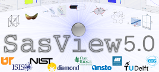

SasView user meeting at SAS2018 (Traverse City, MI, Oct 12, 2018 @2.15pm)

SasView user meeting will be held in connection with
SAS2018 conference Grand Traverse Resort & Spa, Traverse City, Michigan, October 12, 2018 at 2.15pm.
The objective of this half day workshop is to demonstrate SasView 5.0,
which comes with the completely refactored GUI, new features and improved user experience.
The agenda for the workshop include:
- Welcome and intro (goals and outline), Andrew Jackson, 20min
- What is SasView
- What is SasView structure: sasview, sasmodels, bumps
- Demo of existing functionality, Andrew Jackson, Paul Butler and Piotr Rozyczko, 1h
- Going through menu items
- Loading different data types (1D/2D) data
- Fitting 1D and 2D models
- Simultaneous, constrainted and batch fitting
- Calculators
- Pr inversion, Invariant perspective
- Correlation functions
- Break 25min
- How to write and distribute user models, Tim Snow, 30min
- Writing models using plugin editor
- Category manager
- Python and C model
- Distributing models on SasView marketplace
- SasView CLI, Wojtek Potrzebowski, 20min
- SasCalc example
- Calculating form factors from sasmodels
- 1D fitting using sasmodels and bumps
- 2D fitting
- Batch fitting
- Documentation, Tutorials and Bug reporting, Paul Butler, 10min
- How to become a SasView Developer, Paul Butler, 5min
- Community discussion and feedback 20min
SasView 5.0 was delivered as a part of
SINE2020 project, which receives funding from the European Union’s Horizon 2020
research and innovation programme under grant agreement No 654000